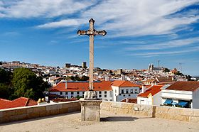

Portalegre é uma cidade portuguesa, capital do Distrito de Portalegre, situada na região do Alentejo, sub-região do Alto Alentejo, com 15 374 habitantes. Portalegre é a cidade capital de distrito com menos população em Portugal e a segunda maior cidade do seu distrito, ficando apenas atrás de Elvas que tem mais 1 266 habitantes no seu centro urbano. É sede de um município com 447,14 km² de área e 21 868 habitantes (2012), subdividido em 7 freguesias. O município é limitado a norte pelo município de Castelo de Vide, a nordeste por Marvão, a leste pela Espanha, a sul por Arronches e Monforte e a oeste pelo Crato.
O clima de Portalegre é mediterrânico e as temperaturas oscilam consideravelmente entre os meses mais quentes e os meses mais frios. As temperaturas, no Inverno, podem descer abaixo dos 0 °C e as temperaturas (máximas) no Verão podem atingir valores na casa do 38 °C/39 °C. As altas temperaturas ocorrem devido ao facto de esta cidade encontrar-se no Alentejo, a região mais quente de Portugal no Verão. As maior e menor temperaturas registadas em Portalegre no periodo 1971-2000 foram 40,4 °C e -4,5 °C. Porém,há registos de -8 °C em 1941 e 43,3 °C no mesmo ano.
Portalegre é uma cidade onde a presença de estudantes é muito forte, já que três das quatro escolas que compõem o Instituto Politécnico de Portalegre se situam na cidade e têm cerca de 3 500 alunos, ou seja, mais de 20% da população permanentemente residente na cidade.
